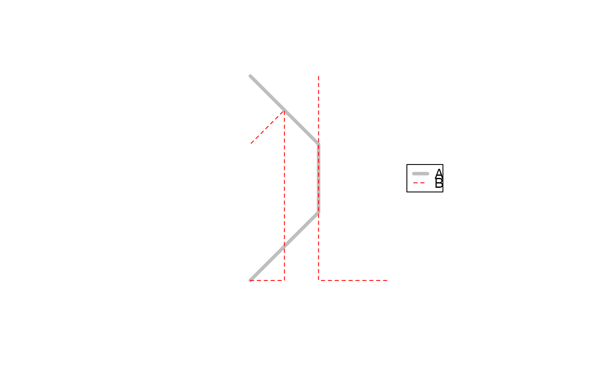
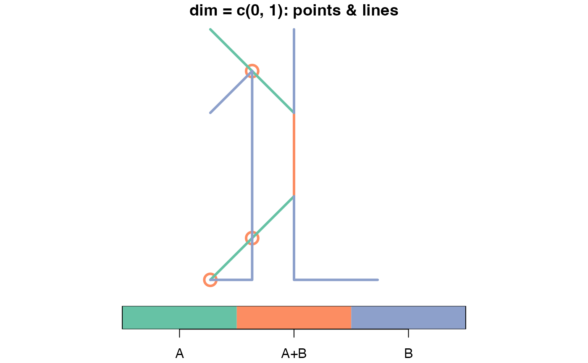
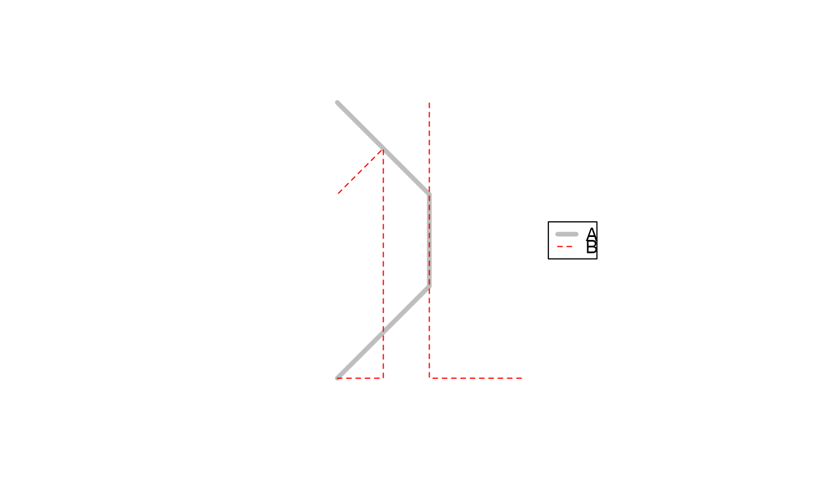
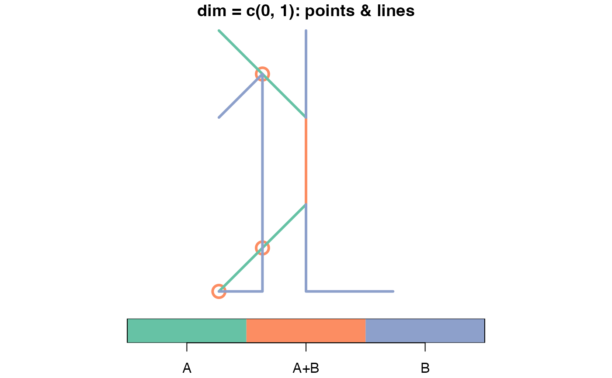

sf equivalent of QGIS Union
st_or(x, y, dim = 2, suffix = c(".x", ".y"), suffix.all = FALSE, ...)Arguments
- x
object of class
sf,sfcorsfg- y
object of class
sf,sfcorsfg- dim
integer: A combination of 0, 1, and/or 2 (default) that constrains the dimension(s) of the returned geometries. 0 for points, 1 for lines, 2 for surfaces.
- suffix
length 2 character vector (default
c(".x", ".y")) attached as suffix to attribute headings inherited from argumentxresp. fromy- suffix.all
TRUEsuffixes all attribute headings inherited from argumentsxandyaccording tosuffix;FALSE(default) suffixes only homonymous attribute headings.- ...
arguments passed on to
s2_options
Value
geometry set containing the intersection of x and y and
the non-overlapping parts of x and y. The attribute table is
filled with attribute values from the respective original geometry set for
non-overlapping features, and attribute values from both geometry sets for
overlapping features. The dimension(s) of the returned geometries is/are
determined with the argument dim.
Details
st_or() consists at its core of code presented by
TimSalbim on gis.stackexchange
. In addition to its precursor this version of st_or() includes:
a more robust version of the internal function
st_erase()equivalent tost_erase_robustthe ability to handle homonymous attribute variables of both input geometry sets (s. below examples)
the possibility to give customized suffixes to attribute variables corresponding to the geometry set they originated from (s. below examples)
handling of input layers with differently named geometry columns and/or being totally overlapped by the other input layer.
restricts geometric operations to geometries of the input layers
xandyoverlapping those of the other input layer (same asst_erase_robust).
Examples
library(dplyr)
#>
#> Attaching package: 'dplyr'
#> The following objects are masked from 'package:terra':
#>
#> intersect, union
#> The following objects are masked from 'package:stats':
#>
#> filter, lag
#> The following objects are masked from 'package:base':
#>
#> intersect, setdiff, setequal, union
library(sf)
st_or(poly_1, poly_2) %>% plot()
#> Warning: attribute variables are assumed to be spatially constant throughout all geometries
 st_or(poly_1, poly_2) %>% st_drop_geometry()
#> Warning: attribute variables are assumed to be spatially constant throughout all geometries
#> A.x B C A.y D E
#> 1 Pq 1 1983 z 48 2015
#> 2 Pq 1 1983 y 36 2016
#> 3 Qr 2 1984 y 36 2016
#> 4 Pq 1 1983 x 24 2017
#> 5 Rs 3 1985 x 24 2017
#> 6 Pq 1 1983 w 12 2018
#> 7 Qr 2 1984 w 12 2018
#> 8 Rs 3 1985 w 12 2018
#> 9 St 4 1986 w 12 2018
#> 10 Qr 2 1984 <NA> NA NA
#> 11 Rs 3 1985 <NA> NA NA
#> 12 St 4 1986 <NA> NA NA
#> 13 <NA> NA NA z 48 2015
#> 14 <NA> NA NA y 36 2016
#> 15 <NA> NA NA x 24 2017
# to avoid repeated warning messages triggered by non-spatially constant ...
# ... attribute variables, set them all to "constant":
st_agr(poly_1) <- "constant"
st_agr(poly_2) <- "constant"
# Give customized suffixes to homonymous attributes of layers x and y:
st_or(poly_1, poly_2, suffix = c("_poly_1", "_poly_2")) %>% plot()
st_or(poly_1, poly_2) %>% st_drop_geometry()
#> Warning: attribute variables are assumed to be spatially constant throughout all geometries
#> A.x B C A.y D E
#> 1 Pq 1 1983 z 48 2015
#> 2 Pq 1 1983 y 36 2016
#> 3 Qr 2 1984 y 36 2016
#> 4 Pq 1 1983 x 24 2017
#> 5 Rs 3 1985 x 24 2017
#> 6 Pq 1 1983 w 12 2018
#> 7 Qr 2 1984 w 12 2018
#> 8 Rs 3 1985 w 12 2018
#> 9 St 4 1986 w 12 2018
#> 10 Qr 2 1984 <NA> NA NA
#> 11 Rs 3 1985 <NA> NA NA
#> 12 St 4 1986 <NA> NA NA
#> 13 <NA> NA NA z 48 2015
#> 14 <NA> NA NA y 36 2016
#> 15 <NA> NA NA x 24 2017
# to avoid repeated warning messages triggered by non-spatially constant ...
# ... attribute variables, set them all to "constant":
st_agr(poly_1) <- "constant"
st_agr(poly_2) <- "constant"
# Give customized suffixes to homonymous attributes of layers x and y:
st_or(poly_1, poly_2, suffix = c("_poly_1", "_poly_2")) %>% plot()
 # If only homonymous attributes from one layer should get a suffix, set ...
# ... the suffix for the other layer to an empty string:
st_or(poly_1, poly_2, suffix = c("", ".y")) %>% names()
#> [1] "A" "B" "C" "A.y" "D" "E" "geometry"
# If all attributes attributes of both layers x and y should get a
# ... layer-specific suffix, set suffix.all = TRUE:
st_or(poly_1, poly_2, suffix.all = TRUE) %>% names()
#> [1] "A.x" "B.x" "C.x" "A.y" "D.y" "E.y" "geometry"
# If only all attributes from one layer should get a suffix, set the suffix ...
# ... for the other layer to an empty string and set suffix.all = TRUE:
st_or(poly_1, poly_2, suffix = c("", ".y"), suffix.all = TRUE) %>% names()
#> [1] "A" "B" "C" "A.y" "D.y" "E.y" "geometry"
# create two layers with overlapping linestrings:
ls1 <- st_linestring(cbind(c(0, 1, 1, 0), c(0:3)))
ls2 <- st_linestring(cbind(c(2, 1, 1), c(0, 0, 3)))
ls3 <- st_linestring(cbind(c(0, 0.5, 0.5, 0), c(0, 0, 2.5, 2)))
A <- st_sf(id_A = 1, A = "A", geom = st_sfc(ls1), agr = "constant")
B <- st_sf(id_B = 1:2, B = "B", geom = st_sfc(ls2, ls3), agr = "constant")
plot(st_geometry(A), col = "gray", lwd = 4, extent = st_bbox_common(A, B))
plot(st_geometry(B), col = "red", lty = 2, add = TRUE)
legend("right", legend = c("A", "B"), col = c("gray", "red"), lwd = c(4, 1), lty = c(1, 2))

# when both input layers consist of linestings, and if the default specification ...
# ... dim = 2 (for surfaces / (multi)polygons) is used, a sf-object with zero ...
# ... rows will be returned:
st_or(A, B)
#> Simple feature collection with 0 features and 4 fields
#> Bounding box: xmin: NA ymin: NA xmax: NA ymax: NA
#> CRS: NA
#> [1] id_A A id_B B geom
#> <0 rows> (or 0-length row.names)
# to get lines returned set dim = 1:
comb_dim_1 <- st_or(A, B, dim = 1) %>%
mutate(comb = ifelse(is.na(A), "B", ifelse(is.na(B), "A", "A+B")))
plot(comb_dim_1[, "comb"], lwd = 3, key.pos = 1, main = "dim = 1: only lines")
# for returning lines and points where lines cross or touch lines of the other ...
# ... input layer, set dim = c(0, 1):
comb_dim_0_1 <- st_or(A, B, dim = c(0, 1)) %>%
mutate(comb = ifelse(is.na(A), "B", ifelse(is.na(B), "A", "A+B")))
plot(comb_dim_0_1[, "comb"], lwd = 3, cex = 2, key.pos = 1, main = "dim = c(0, 1): points & lines")

all.equal(
st_or(A, B, dim = c(0, 1)), # returns points & lines
st_or(A, B, dim = c(0, 1, 2)) # returns points, lines (& if available surfaces)
)
#> [1] TRUE
# If only homonymous attributes from one layer should get a suffix, set ...
# ... the suffix for the other layer to an empty string:
st_or(poly_1, poly_2, suffix = c("", ".y")) %>% names()
#> [1] "A" "B" "C" "A.y" "D" "E" "geometry"
# If all attributes attributes of both layers x and y should get a
# ... layer-specific suffix, set suffix.all = TRUE:
st_or(poly_1, poly_2, suffix.all = TRUE) %>% names()
#> [1] "A.x" "B.x" "C.x" "A.y" "D.y" "E.y" "geometry"
# If only all attributes from one layer should get a suffix, set the suffix ...
# ... for the other layer to an empty string and set suffix.all = TRUE:
st_or(poly_1, poly_2, suffix = c("", ".y"), suffix.all = TRUE) %>% names()
#> [1] "A" "B" "C" "A.y" "D.y" "E.y" "geometry"
# create two layers with overlapping linestrings:
ls1 <- st_linestring(cbind(c(0, 1, 1, 0), c(0:3)))
ls2 <- st_linestring(cbind(c(2, 1, 1), c(0, 0, 3)))
ls3 <- st_linestring(cbind(c(0, 0.5, 0.5, 0), c(0, 0, 2.5, 2)))
A <- st_sf(id_A = 1, A = "A", geom = st_sfc(ls1), agr = "constant")
B <- st_sf(id_B = 1:2, B = "B", geom = st_sfc(ls2, ls3), agr = "constant")
plot(st_geometry(A), col = "gray", lwd = 4, extent = st_bbox_common(A, B))
plot(st_geometry(B), col = "red", lty = 2, add = TRUE)
legend("right", legend = c("A", "B"), col = c("gray", "red"), lwd = c(4, 1), lty = c(1, 2))

# when both input layers consist of linestings, and if the default specification ...
# ... dim = 2 (for surfaces / (multi)polygons) is used, a sf-object with zero ...
# ... rows will be returned:
st_or(A, B)
#> Simple feature collection with 0 features and 4 fields
#> Bounding box: xmin: NA ymin: NA xmax: NA ymax: NA
#> CRS: NA
#> [1] id_A A id_B B geom
#> <0 rows> (or 0-length row.names)
# to get lines returned set dim = 1:
comb_dim_1 <- st_or(A, B, dim = 1) %>%
mutate(comb = ifelse(is.na(A), "B", ifelse(is.na(B), "A", "A+B")))
plot(comb_dim_1[, "comb"], lwd = 3, key.pos = 1, main = "dim = 1: only lines")
# for returning lines and points where lines cross or touch lines of the other ...
# ... input layer, set dim = c(0, 1):
comb_dim_0_1 <- st_or(A, B, dim = c(0, 1)) %>%
mutate(comb = ifelse(is.na(A), "B", ifelse(is.na(B), "A", "A+B")))
plot(comb_dim_0_1[, "comb"], lwd = 3, cex = 2, key.pos = 1, main = "dim = c(0, 1): points & lines")

all.equal(
st_or(A, B, dim = c(0, 1)), # returns points & lines
st_or(A, B, dim = c(0, 1, 2)) # returns points, lines (& if available surfaces)
)
#> [1] TRUE